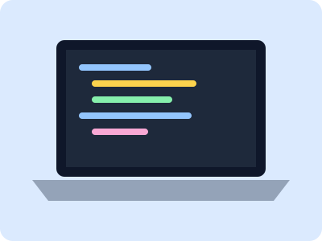

Hi, I'm Lolak Shah Sultan
AI/ML & Software Developer (student)
A Computer Science student specializing in AI/ML and software development, with hands-on experience in C++, databases, and web technologies, currently working on an industry-linked Final Year Project.
See my projects
About me
I am a Computer Science student at the University of Management and Technology (UMT), Lahore, with an interest in Artificial Intelligence, Machine Learning, and Software Development. I have academic experience in C++, databases, and web technologies, and I am currently working on an industry-linked Final Year Project. I am passionate about learning new technologies, solving real-world problems, and building practical software solutions.